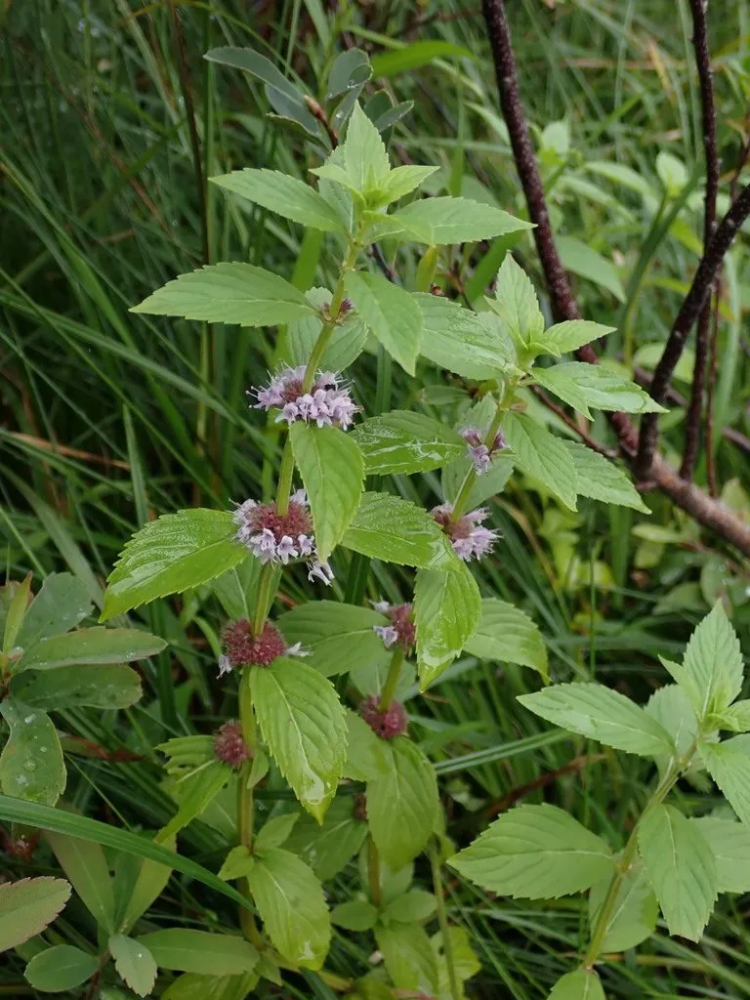

花卉与草本 · 植物界
薄荷 Mentha canadensis

唇形科多年生草本，叶片揉碎后散发清凉薄荷香，可制茶、入药和提取薄荷脑，是夏日常见的芳香植物与食用香草。
- 分类
- 门被子植物门纲木兰纲目唇形目科唇形科属薄荷属
- 栖息环境
- 溪边、林下、湿地及田埂，喜湿润、阳光充足的环境
- 地理分布
- 原产东亚与北美，中国江苏、安徽、河南、江西等地大面积栽培
- 保护级别
- 暂无评估
物种志
薄荷为唇形科薄荷属多年生草本，株高 30–80 厘米，茎直立或匍匐，方形，有节，节上生根。叶片对生，卵形至披针形，边缘有锯齿，两面被短毛。轮伞花序腋生，花小，花冠淡紫色或白色，花期 7–9 月，果期 8–10 月。
薄荷原产东亚与北美温暖湿润地区，中国江苏、安徽、河南等地栽培较多。它喜阳光充足、湿润的环境，适应性强，可用根茎分株或扦插繁殖，地栽时地下茎蔓延迅速，容易长成成片群落。叶片含薄荷醇与薄荷酮，揉碎即有清凉气味，可鲜食、泡茶、调制饮品，也可提取薄荷脑用于医药和食品工业；中医认为薄荷有疏散风热之效，但芳香植物不宜过量长期饮用。
形态与习性
- 株高30–80 厘米，茎方形有节
- 花期7–9 月，轮伞花序腋生
- 果期8–10 月，小坚果
- 光照喜光，也耐半阴
- 水分喜湿润，忌长期干旱
- 土壤疏松肥沃、保水性好的壤土
- 繁殖分株、扦插或根茎繁殖
- 主要用途薄荷茶、食品调味、提取薄荷脑
趣味知识
- 薄荷的清凉感来自薄荷醇，它刺激皮肤冷觉感受器，让人产生“凉”的错觉。
- 薄荷茎为四棱形，节上容易生根，剪一段茎插入水中即可繁殖。
- 地栽薄荷地下茎蔓延快，容易侵占邻近花坛，宜用花盆限根。
- 薄荷开花时蜜源丰富，能吸引蜜蜂和食蚜蝇等传粉昆虫。